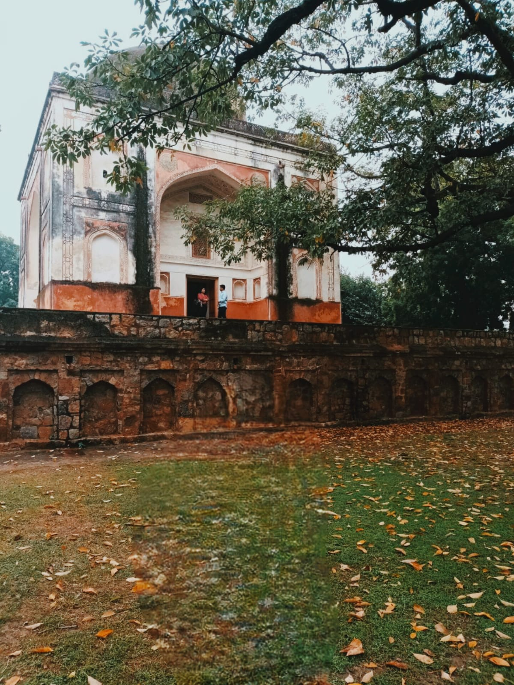

- 
Sunder Nursery
Sunder Nursery was established by the British in 1913 and is located on the fabled Grand Trunk Road from the 16th century. In a major effort to preserve and showcase Delhi's rapidly disappearing natural habitats, the CPWD, in partnership with the Aga Khan Trust for Culture and the Archaeological Survey of India, is transforming the 90-acre Sunder Nursery into a world-class urban park with a distinct micro-habitat zone housing Delhi's ecological diversity amidst restored monuments. This initiative is a first for India. When the Sunder Nursery project is finished, visitors will be able to participate in an inclusive and engaging experience through an interpretation center, cultural activities, and ecological and heritage paths.
Adjacent to Humayun's Tomb, a UNESCO World cultural Site in Delhi, is Sunder Nursery, a 16th-century cultural park complex formerly known as Azim Bagh or Bagh-e-Azeem.Originally constructed by the Mughals in the sixteenth century under the name Azim Bagh, it is situated on the Grand Trunk Road and spans 90 acres (36 hectares).Future plans call for connecting adjacent regions to create India's largest park, spanning 900 acres.
On February 21, 2018, the nursery reopened to the public as a heritage park following renovations that began in 2007. As of right now, it is Delhi's first arboretum, with over 300 different species of trees. The nursery was founded to cultivate experimental plants during the British Raj; its current status as a nursery comes from its lake. The Sunder at Sunder Nursery has space thanks to the Sunder Burj mausoleum. The park is now referred to as "Delhi's Central Park" following restorations, while the locals still call it Sunder Nursery (not to be confused with the Central Park in Connaught Place, New Delhi).
- Flora: Section of Canna Plants, Sunder Nursery dwellings made of bonsai There are more than 280 native tree species in the region. 4200 trees have been mapped using GIS. In addition, there are about 36 different species of butterflies and about 80 different kinds of birds. Some of the bonsai housed within are almost eight decades old.
- Trees: Sunder Nursery is Delhi's first arboretum. It is home to some rare trees such as a Pink Cedar (Acrocarpus fraxinifolius), the only one in Delhi.
- Birds 80 different species of birds have been located in the area through bird mapping. In 2014, the rare Ultramarine Flycatcher was spotted in the park area, a bird not seen in New Delhi for many years.